Introducción a la terminal¶

¿Que es una terminal?¶
La terminal o consola es una forma generalizada de llamar a la interfaz de usuario de línea de comandos: una pantalla (generalmente, de color de fondo negro sobre letras blancas) donde escribiendo comandos (secuencias de palabras especiales) ordenamos al sistema realizar acciones concretas.
Estas interfaces de usuario fueron muy populares en la década de los 70 y 80, ya que los sistemas de la época carecían de interfaces gráficas y era el sistema habitual para comunicarse con un dispositivo. Con el tiempo, las interfaces gráficas de usuario ganaron popularidad y relegaron a las interfaces de línea de comandos a un segundo plano, aunque nunca terminaron de perder la popularidad que las caracterizaba, sobre todo entre los usuarios más técnicos.
Aunque una interfaz gráfica de usuario (GUI) puede ser más cómoda y agradable para el usuario, las razones para preferir una interfaz de línea de comandos son muchas:
- Es más rápido crear un programa para línea de comandos.
- Suele ser más potente en cuanto a personalización de opciones.
- Permite creación de scripts para automatizar tareas repetitivas.
- Suele ser una opción más universal entre sistemas.
- Suele ser instantáneo, al no tener que cargar pantallas gráficas.
Es por ello que en el mundo de la informática, y del desarrollo en particular, es una vertiente muy utilizada aún en nuestros días, que no suele ser comprendida por personas externas al sector, que lo consideran un «atraso» al no conocer sus ventajas y sólo conocer sus desventajas.
No obstante, el panorama de línea de comandos ha mejorado muchísimo desde estas primeras décadas y hoy en día existen multitud de opciones para convertir una terminal en una herramienta de trabajo muy productiva, que será nada menos que nuestro objetivo.
Conceptos básicos¶
Hasta ahora, para simplificar, hemos utilizado una gran cantidad de términos que no son exactamente lo que parecen, por lo que antes de continuar, vamos a dedicar unos minutos a explicarlos, ya que los utilizaremos bastante:
| Término | Significado |
|---|---|
Interfaz de usuario |
Medio (genérico) por el cuál se comunica un usuario y una máquina. Abreviada UI. |
Interfaz de línea de comandos |
Interfaz de usuario (UI) basado en texto. Abreviada como CLI. |
Interfaz gráfica de usuario |
Interfaz de usuario (UI) basado en paneles gráficos o táctiles. Abreviada como GUI. |
Interprete de comandos |
Software encargado de gestionar los comandos del usuario y sus respuestas. Se suele abreviar como Shell. |
Terminal o Consola |
Dispositivo utilizado antiguamente para comunicarse con un sistema. |
Emulador de terminal |
Software que simula ser una terminal, generalmente una ventana donde hay una interfaz CLI. |
Comando |
Es cada una de las instrucciones que escribimos en una interfaz CLI para comunicarnos. |
Parámetro |
Son las diferentes opciones que puede tomar un comando para alterar su funcionamiento. |
Script |
Es un grupo de comandos, creado con la intención de automatizar tareas. |
Una interfaz de usuario (UI) es como se denomina al medio que utiliza un usuario para comunicarse con una máquina. En nuestro caso nos vamos a referir a interfaces de línea de comandos (CLI) cuando son basadas en texto, donde los usuarios escriben órdenes o comandos y el sistema las lee y realiza, o devuelve resultados e información.
Por otra parte, las interfaces gráficas de usuario (GUI) son la evolución natural de estas, utilizando pantallas gráficas o sistemas táctiles, mucho más sencillos y agradables de utilizar para la mayoría de los usuarios, sin embargo, habitualmente menos apropiadas y flexibles en contextos informáticos de desarrollo o sistemas.
Además, también hay que aclarar el concepto de intérprete de comandos (shell). Se trata del software que tiene instalado el sistema y que utilizamos en la interfaz de línea de comandos. Por ejemplo, una interfaz de línea de comandos puede utilizar varios intérpretes diferentes, como por ejemplo, suele ocurrir con Bash o Zsh en GNU/Linux.
Es también muy frecuente utilizar la palabra terminal (en esta misma página lo hago frecuentemente) en lugar de emulador de terminal. Se hace para acortar, porque en realidad una terminal es un aparato que antiguamente se utilizaba para comunicarse con otro sistema, mientras que un emulador de terminal, que es lo que realmente utilizamos en nuestros dispositivos, es un software que simula ser una de esas terminales, habitualmente con apariencia de ventana de línea de comandos, aunque se puede encontrar de todo, como EDEX-UI.
Solemos utilizar la palabra comando para referirnos a la instrucción que escribimos en el emulador de terminal para comunicarnos con el sistema, mientras que opciones o parámetros son los detalles que se suelen escribir a continuación para personalizar la forma de trabajar del comando o alterar su funcionamiento.
Por último, también es muy común crear scripts, que no son más que ficheros de texto donde se escriben una colección de comandos para realizar una tarea concreta, con la intención de automatizarla y sea mucho más fácil para nosotros realizarla, ya que en lugar de escribir todos esos comandos por separado, sólo tenemos que llamar a ese script.
Por ejemplo, en el ejemplo anterior, tenemos lo siguiente:
- El comando (verde). Muestra todos los ficheros que tenemos en la carpeta actual.
- El primer parámetro (amarillo). Muestra ese listado en formato ancho.
- El segundo parámetro (azul). Muestra sólo el contenido de la carpeta
folder.
Ayuda a terminal (Man pages)¶
Quizás uno de los primeros consejos que nos pueden dar en la terminal de GNU/Linux es el de aprender a consultar la ayuda. Continuamente, nos estaremos enfrentando a nuevos comandos, parámetros adicionales o intentando buscar detalles sobre un comando que desconocemos o que, quizás, no recordamos.
Para lidiar con ello, Linux tiene varias formas de consultar ayuda breve o amplios manuales de ayuda, por lo que es conveniente conocer cada una de las formas más interesantes de obtener más información sobre algún detalle.
Ayuda rápida (--help)¶
Quizás, la forma más rápida de consultar la ayuda, es utilizar el parámetro --help después del comando que desconocemos y queremos más ayuda. Esto nos mostrará una, generalmente, breve pantalla de ayuda, con los parámetros u opciones más comunes. Útil para consultar rápidamente detalles frecuentes o, aparentemente, muy populares.
Por ejemplo, si queremos consultar la ayuda del comando uptime, simplemente escribimos:
$ uptime --help
Usage:
uptime [options]
Options:
-p, --pretty show uptime in pretty format
-h, --help display this help and exit
-s, --since system up since
-V, --version output version information and exit
For more details see uptime(1).
Nota
No todos los comandos tienen ayuda rápida, pero si la mayoría, por lo que es una primera opción bastante interesante.
¿Para qué sirve este comando?¶
En el caso de que simplemente queramos saber para que sirve un comando específico, podemos utilizar el comando whatis (qué es) seguido del nombre del comando:
$ whatis cat
cat (1) - concatenate files and print on the standard output
Otro comando muy similar es apropos (a propósito de...), el cuál nos muestra comandos relacionados al que escribimos a continuación, algo muy útil para aprender nuevos comandos:
$ apropos bzip2
bzcmp (1) - compare bzip2 compressed files
bzdiff (1) - compare bzip2 compressed files
bzegrep (1) - search possibly bzip2 compressed files for a regular expression
bzfgrep (1) - search possibly bzip2 compressed files for a regular expression
bzgrep (1) - search possibly bzip2 compressed files for a regular expression
bzip2 (1) - a block-sorting file compressor, v1.0.6
bzip2recover (1) - recovers data from damaged bzip2 files
bzless (1) - file perusal filter for crt viewing of bzip2 compressed text
bzmore (1) - file perusal filter for crt viewing of bzip2 compressed text
Nota
Ten en cuenta que el número que aparece a continuación (entre paréntesis), denota en que página del manual se encuentra (ver siguiente apartado). Si lo que buscamos son comandos, el número debe ser 1. También podemos escribir apropos 1 seguido del comando, para obligar a apropos a sólo mostrarnos resultados de esa página.
Páginas de manual (man pages)¶
Si existe un comando de ayuda por excelencia en Linux, son las «páginas man», o lo que es lo mismo, las páginas de manual. En ellas puedes encontrar extensa información sobre comandos, parámetros, opciones y otros detalles sobre comandos, programación, ficheros del sistema u otros detalles.
La forma de consultar estas páginas de manual es muy sencilla: escribimos man seguido del nombre del comando (o la palabra a investigar), por ejemplo: man ls. Esto nos mostrará una página de ayuda sobre el mismo, donde podemos aprender a utilizarlo, ver que opciones o parámetros tiene, el autor del mismo, etc. Ten en cuenta que muchas veces no vienen instaladas en el sistema, y hay que instalarlas con un sudo apt install man.
Esta es la opción preferida cuando queremos buscar información detallada sobre alguna funcionalidad específica de algún comando.
Si estamos utilizando la shell zsh, una forma de mejorar las páginas man es incluyendo el plugin colored-man-pages en la línea de plugins del fichero ~/.zshrc. Esto añadirá un resaltado de color a las páginas man, que harán la experiencia de leer estas páginas un poco más agradable.
Nota
Si quieres poner las páginas man en español, lo recomendable sería instalar los paquetes en español en el sistema con sudo apt install manpages-es manpages-es-extra y establecer el idioma del sistema en español.
Páginas man simplificadas (tldr)¶
La abreviatura TL;DR (Too long, didn't read) es un acrónimo utilizado para referirse a que algo no se ha leído porque es demasiado largo. Las páginas man, aunque muy útiles, tienen esa característica: muchas veces no se consultan porque debes leer gran cantidad de información, tardando así bastante en encontrar lo que buscas.
Si esta es tu opinión, probablemente te interese el proyecto tldr pages, un sustituto de las páginas man, ideadas para simplificar la ayuda y mostrar directamente ejemplos prácticos de referencia que suelen resolver la mayoría de las dudas, sobre todo cuando sólo consultas para recordar algo olvidado.
Su forma de utilizarlo, es simplemente escribir tldr seguido del comando en cuestión:
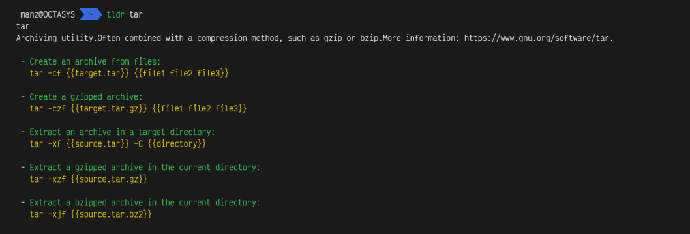
Navi, el hada del terminal¶
Otro recurso bastante interesante de cara a mostrar ayuda al usuario, el uso de navi, un asistente interactivo desarrollado en Rust y que toma su nombre del hada del videojuego «The Legend of Zelda», que tiene como finalidad mostrar unas cheatsheets interactivas con los comandos y parámetros más utilizados, al estilo de tldr.
Para instalar navi, necesitaremos tener instalado Rust. Si lo tenemos instalado, podemos escribir cargo install navi. Con ello tendremos el asistente navi, pero tendremos que instalar las cheatsheets que queramos tener descargadas.
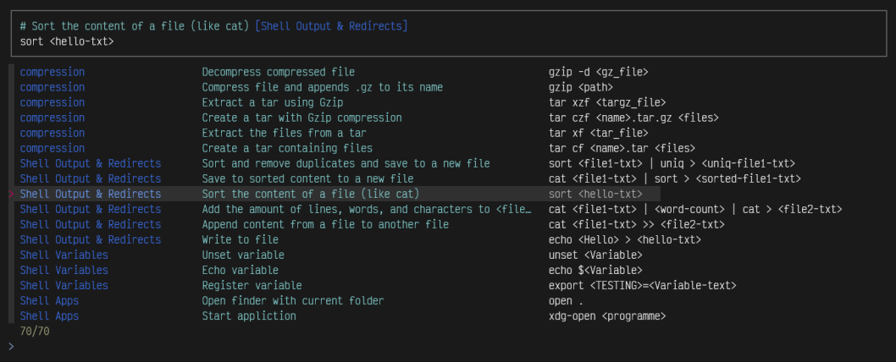
Con navi repo browse se nos muestran varios repositorios con las cheatsheets más conocidas, de ahí podemos ir instalando las que más nos interese consultar para tenerlas instaladas en nuestro sistema. Si por otro lado, lo que queremos es instalar una cheatsheet concreta de un repositorio de GitHub, podemos hacerlo con el comando navi repo add <URL>.
Una vez descargadas en nuestro sistema, podemos consultar rápidamente con el comando navi query seguido de la palabra clave a consultar. Otros proyectos similares podrían ser cheat o manly.
Nota: Recuerda que si lo que quieres es una cheatsheet física en formato PDF lista para imprimir, tienes nuestra cheatsheet de la terminal de Linux en esta misma página.
Instalación de WSL¶
Tradicionalmente, Windows ha proporcionado a sus usuarios una interfaz de línea de comandos que funciona bajo su propio sistema, heredado de MS-DOS y diferente a GNU/Linux, el cuál se basa en un sistema UNIX. Sin embargo, en Windows 10, con la irrupción de Windows Subsystem for Linux (más comunmente denominado WSL), esto ha cambiado radicalmente.
Otros sistemas operativos como GNU/Linux o Mac, disponen de una interfaz de línea de comandos basada en UNIX, por lo que hasta el momento era bastante complejo tener compatibilidad entre sistemas. Con la adopción de WSL en Windows, Microsoft introduce una capa intermedia que funciona con un núcleo de Linux real (kernel) y en el que se pueden instalar distribuciones de GNU/Linux (desde la tienda oficial de Microsoft o de forma manual) como por ejemplo Ubuntu, Debian, Kali o incluso la distribución minimalista Alpine.
Requisitos previos¶
Para poder disponer de una terminal de GNU/Linux en nuestro Windows, antes necesitamos asegurarnos que nuestro equipo cumple los siguientes requisitos:
- Necesitaremos soportar y tener activada la virtualización Hyper-V en la BIOS/UEFI.
- Necesitaremos tener Windows 10, en cualquiera de sus versiones (salvo Windows S).
- Debemos tener la característica Windows Subsystem for Linux activada.
- Debemos tener la característica Virtual machine plataform activada.
- Para usar WSL2 debemos actualizar Windows 10 al menos hasta Mayo de 2020.
Activación de características¶
En la BIOS/UEFI del equipo, debes tener activada la característica Virtualización Hyper-V o Hyper-threading virtualization. Dicha característica puede encontrarse en un menú diferente, dependiendo de la marca y modelo de la placa.
Por otro lado, para activar las características mencionadas anteriormente en Windows, accedemos a Inicio y buscamos Activar o desactivar características de Windows, donde encontraremos un menú de selección para activar las casillas Subsistema de Windows para Linux y Plataforma de máquina virtual:
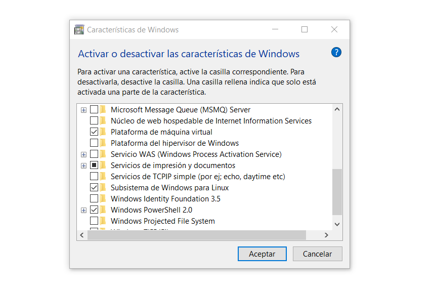
La primera de ellas es absolutamente necesaria, puesto que es el propio WSL. La segunda de ellas es necesaria para utilizar WSL2, y es posible que no aparezca si no tienes Windows 10 actualizado. Puedes comprobarlo, accediendo a Inicio y abriendo una terminal de Windows escribiendo CMD o Símbolo de sistema y escribiendo lo siguiente:
> ver
Microsoft Windows [Versión 10.0.19041.329]
El comando ver nos mostrará la versión instalada de Windows 10. Si es igual o superior a 10.0.19041, podremos utilizar WSL2, en caso contrario, es posible que no podamos utilizar WSL o sólo WSL1. Para solucionarlo, revisa las actualizaciones de Windows e instala las que tengas pendientes.
!!! Nota:
También es posible comprobar que versión tenemos instalada pulsando +R y escribiendo winver. Si tenemos la versión 2004 o superior, podremos utilizar WSL2.
¿Qué distros tengo en WSL?¶
Windows Subsystem for Linux funciona de modo que podemos tener varias distribuciones instaladas en nuestro sistema y utilizar la que queramos. Para ver que distribuciones tenemos instaladas, abrimos una terminal de Windows (CMD) y escribimos wsl --list:
> wsl --list
El subsistema de Windows para Linux no tiene distribuciones instaladas.
Para instalar las distribuciones, se puede visitar Microsoft Store:
https://aka.ms/wslstore
En el caso de tener alguna distribución de Linux instalada, nos aparecerían en la lista, como veremos un poco más adelante.
Si en lugar de aparecernos el mensaje anterior nos muestra un error por no encontrar el comando
wsl, muy probablemente no tengamos instalada la característica Windows Subsystem for Linux que mencionamos en el apartado anterior.
Instalar Linux (WSL)¶
El primer paso que deberíamos realizar es instalar una distribución de GNU/Linux en nuestro WSL. Existen muchas de ellas para elegir. Personalmente suelo elegir Debian, aunque también hay otras distribuciones:
| Distribución | Página oficial | Enlace a tienda Microsoft | Descarga manual (.appx) |
|---|---|---|---|
| Debian Linux | Debian | Debian MS Store | Debian .appx |
| Ubuntu Linux | Ubuntu | Ubuntu MS Store | Ubuntu 20.04 .appx |
| Kali Linux | Kali | Kali MS Store | Kali Linux .appx |
| Open Suse | Open Suse | Open Suse MS Store | Open Suse .appx |
| Alpine Linux ¹ | Alpine | Alpine MS Store | ¹ No oficial. |
Las distribuciones se pueden instalar automáticamente desde la tienda oficial de Microsoft, o manualmente, ejecutando un archivo .appx que contiene la distribución de Linux a instalar. Si lo hacemos de la primera forma, se instalará de forma transparente, si lo hacemos de la segunda forma, nos mostrará una ventana similar a la siguiente:
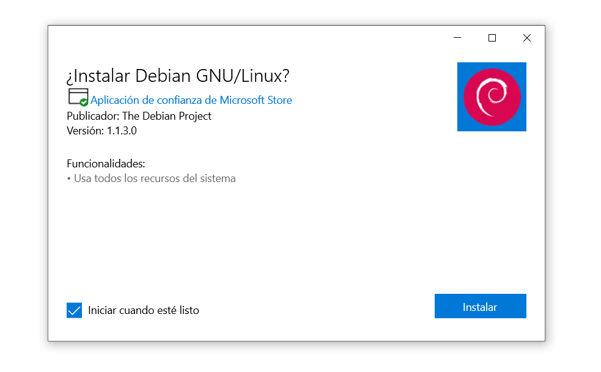
Una vez instalada la distribución de Linux en nuestro sistema, tras esperar un corto espacio de tiempo, al iniciarla por primera vez nos aparecerá una ventana parecida a esta:
Installing, this may take a few minutes...
Please create a default UNIX user account. The username does not need to match your Windows username.
For more information visit: https://aka.ms/wslusers
Enter new UNIX username:
En ella, se nos preguntará el nombre de usuario y su correspondiente contraseña para utilizar en nuestra distribución de Linux de WSL. El nombre de usuario debe ser en minúsculas y no es necesario que coincida con el nombre que tengamos en nuestra cuenta de Windows.
Una vez hecho esto, escribimos exit (o cerramos la ventana y volvemos a abrir un símbolo del sistema). Vamos a comprobar que todo ha ido bien y tenemos una distribución instalada:
> wsl --list
Distribuciones del subsistema de Windows para Linux:
Debian (predet.)
Como se puede ver, en nuestro caso nos aparece una distribución Debian (marcada como predeterminada). Si instalasemos varias distribuciones las veríamos en esta lista, y podríamos seleccionar una como predeterminada escribiendo wsl --set-default Debian o wsl -s Debian.
Convertir distro WSL1 a WSL2¶
Por defecto, en nuestro Windows 10, actualmente las distribuciones se instalan como distros utilizando WSL1. Sin embargo, WSL2 está disponible y proporciona múltiples mejoras, ya que incorpora un kernel de Linux real utilizando Hyper-V, ofreciendo así un rendimiento más alto, a la vez que mejor soporte y compatibilidad.
Para aprovechar las últimas ventajas de WSL, es necesario convertir las distribuciones a WSL2, cosa que podemos hacer simplemente escribiendo wsl --set-version Debian 2, lo que convertirá nuestra distribución «Debian» a WSL2:
En el caso de que nos aparezca el error
Habilita la característica Plataforma de máquina virtual de Windows y asegúrate de que la virtualización esté habilitada en el BIOS.revisa los puntos mencionados en el primer apartado de esta página.
Si todo ha ido bien, nos debería aparecer una pantalla similar a esta:
> wsl --set-version Debian 2
Conversión en curso, esto puede tardar unos minutos...
Para información sobre las diferencias clave con WSL 2, visita https://aka.ms/wsl2
Conversión completada.
En el caso de que nos aparezca el mensaje
La distribución ya es la versión solicitada.significa que no se requiere conversión, ya que la distribución actual ya es WSL2.
Si estamos completamente seguros de querer que todas las distribuciones que utilicemos a partir de ahora sean WSL2, no tenemos más que escribir el comando wsl --set-default-version 2, que indicará a WSL que todas las distribuciones que utilicemos funcionen bajo WSL2 por defecto. De esta forma, el paso anterior no será necesario a partir de ahora.
Iniciar distro de Linux WSL¶
Hay que tener bien claro que bajo Windows, la terminal que utilizamos es cmd.exe o Símbolo de sistema, lo que nos arranca una interfaz de línea de comandos de Windows. Es en esta interfaz donde podemos ejecutar comandos de Windows como wsl u otros.
Para arrancar una distribución de Linux de las que hemos instalado, tendremos que acceder escribiendo wsl (para entrar en la distribución predeterminada) o escribiendo wsl -d Debian para indicar la distribución a la que queremos entrar, en el caso de tener varias.
Sin embargo, ya te habrás dado cuenta que la terminal de Windows (CMD) es bastante pobre y limitada, sobre todo en cuanto a características de personalización. La mejor opción, ahora que tenemos WSL, es instalar un buen y moderno emulador de terminal, que nos de una buena experiencia al utilizar la terminal.
Algunos de los mejores emuladores de terminal para Windows son los siguientes:
| Emulador | GitHub | Descripción |
|---|---|---|
| Terminal | GitHub | Nueva terminal oficial de Microsoft. |
| ConEmu | GitHub | ConEmu-Maximus5, potente emulador de terminal ultra-personalizable. |
| Cmder | GitHub | Fork de ConEmu, orientado a usabilidad y aspecto visual. |
| Hyper | GitHub | Emulador de terminal basado en Electron. |
| wsl-terminal | GitHub | Emulador de terminal diseñado especialmente para WSL. |
| ConsoleZ | GitHub | Fork de Console2, orientado en una mejor experiencia visual. |
| FluentTerminal | GitHub | Emulador de terminal construída como aplicación universal de Windows (UWP). |
| Terminus | GitHub | Emulador de terminal moderno y visual. |
Personalmente, mi preferido es ConEmu, el cuál tiene multitud de opciones de personalización y permite configurar prácticamente cualquier aspecto del mismo, como por ejemplo, crear una tarea llamada {Shells::WSL} que ejecute wsl.exe al abrir la terminal, y así utilice directamente la distribución de Linux por defecto de WSL.
Convertir rutas Windows a WSL¶
Si lo necesitas, WSL incorpora un comando llamado wslpath, que te permite hacer traducciones de rutas Windows a rutas Linux y viceversa. Para ello, solo tienes que escribir el comando wslpath RUTA_WINDOWS para obtener la misma ruta en formato Linux, o al contrario, escribir el comando wslpath -w RUTA_LINUX para obtener la ruta en formato Windows:
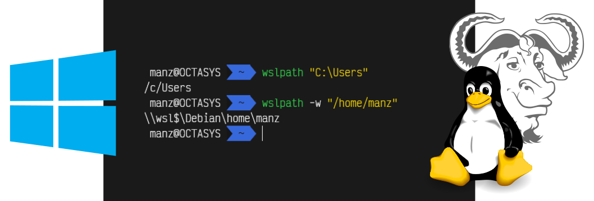
Esto puede ser una forma interesante para intercomunicar ambos sistemas mediante scripts o tareas.
Instalación de zsh¶
Como mencionamos en un apartado anterior, el intérprete de comandos (también llamado shell) es el software o programa que gestiona los comandos que introduce el usuario, para intentar comprenderlos lo mejor posible y comunicarselos a la máquina o sistema de la mejor forma posible.
En GNU/Linux, tenemos multitud de intérpretes de comandos, siendo quizás los más conocidos bash y zsh. Sin embargo, existen multitud de ellos:
| Nombre | Año | Abreviatura | Descripción |
|---|---|---|---|
| Bourne Shell | 1977 | sh |
Intérprete ligero y sencillo, considerado el estándar. |
| C Shell | 1978 | csh |
Intérprete basado en el lenguaje de programación C. |
| Korn Shell | 1983 | ksh |
Intérprete de AT&T de Bourne Shell. |
| Almquist Shell | 1989 | ash |
Intérprete ligero y rápido, popularizado en máquinas de bajo coste. |
| Bourne Again Shell | 1989 | bash |
Popular intérprete de la mayoría de los GNU/Linux. |
| Z Shell | 1990 | zsh |
Intérprete shell mejorado, con añadidos de otras shells. |
| Fish Shell | 2005 | fish |
Intérprete enfocado en la sencillez y una interfaz agradable. |
| Ion Shell | 2015 | ion |
Shell del sistema operativo Redox |
En este artículo veremos como instalar y configurar zsh para tener una terminal moderna, atractiva y con funcionalidades interesantes como autocompletado de comandos basado en el historial, resaltado y detección de comandos existentes o completado avanzado de comandos.
Instalar Z Shell (zsh)¶
El intérprete Z Shell (más conocido como zsh) es uno de los shells más conocidos de GNU/Linux, adoptado hace poco por Apple como su intérprete de terminal por defecto desde 2019. Hoy en día, quizás el más extendido es bash, sin embargo, zsh gana cada día más adeptos debido a su capacidad y potencia de personalización y su activa comunidad. Es una excelente alternativa a bash.
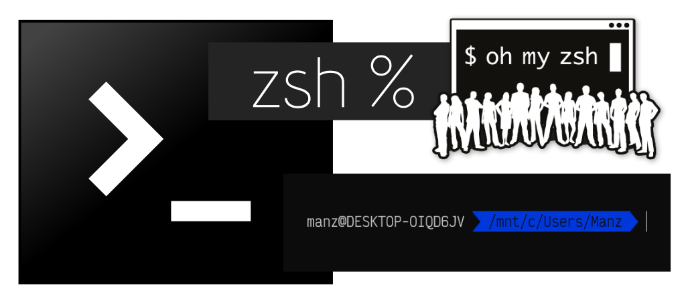
Si tenemos un sistema recién instalado (o por defecto), lo más probable es que tengamos un bash o un sh (más simple). Lo primero que necesitamos tener instalado en nuestro sistema es el intérprete de zsh. Para instalarlo utilizaremos apt, que se encargará de buscar los paquetes necesarios y sus dependencias:
sudo apt update && sudo apt install zsh
Con esto tendríamos el intérprete instalado, pero se trata de un «zsh pelado», sin configuración. De hecho, de momento ni siquiera se va a iniciar por si solo y seguiremos utilizando el interprete que teníamos antes. Si escribimos zsh podemos obligar al sistema a abrir zsh y ver si se ha instalado correctamente. Nos debería aparece una pantalla similar a la siguiente:
zsh.newuser-install.
You are seeing this message because you have no zsh startup files
(the files .zshenv, .zprofile, .zshrc, .zlogin in the directory
~). This function can help you with a few settings that should
make your use of the shell easier.
You can:
(q) Quit and do nothing. The function will be run again next time.
(0) Exit, creating the file ~/.zshrc containing just a comment.
That will prevent this function being run again.
(1) Continue to the main menu.
(2) Populate your ~/.zshrc with the configuration recommended
by the system administrator and exit (you will need to edit
the file by hand, if so desired).
--- Type one of the keys in parentheses ---
Esta es la pantalla de bienvenida de zsh, que nos da varias opciones para configurarlo manualmente, dejar su configuración vacía, entre otras. Marcamos la opción 0, que simplemente creará nuestro fichero de configuración ~/.zshrc para que no nos vuelva a salir este mensaje de bienvenida cada vez que arranquemos zsh.
Si todo ha ido bien, debería aparecernos algo parecido a esto (con el nombre de nuestro sistema):
DESKTOP-OHQ7ANH% _
Escribimos exit para salir de esta sesión y volver a la anterior (donde aún no usabamos zsh).
Utilizar zsh por defecto¶
Habrás comprobado que si cierras la terminal y la vuelves a abrir, parece no haber cambiado nada y no inicia zsh. Esto ocurre porque aunque está instalada en el sistema, aún estás usando otro intérprete de comandos (probablemente, el anterior que tenías). Para saber que intérprete de comandos o shell estamos utilizando, puedes escribir echo $0 o echo $SHELL, el cuál debería mostrarte cuál estas utilizando en el momento actual.
Por otro lado, escribiendo cat /etc/shells podemos ver que intérpretes tenemos instalados en nuestro sistema y podemos utilizar. Si queremos cambiar el shell con el que inicia un usuario (por ejemplo, manz), solo tenemos que utilizar el comando chsh (change shell):
chsh manz -s /bin/zsh
Perfecto. Ahora cuando volvamos a abrir una terminal, nos arrancará la shell zsh. Ahora que ya lo tenemos todo listo, toca configurarlo para que haga magia.
Framework Oh-My-Zsh¶
Uno de los frameworks más populares de zsh es Oh-My-Zsh!, el cuál podremos instalar para dotar a nuestro sistema de funcionalidades muy interesantes que nos harán más cómodo su uso. Para instalarlo necesitaremos curl y git, por lo que instalamos dichos requisitos previamente:
$ sudo apt install git curl -y
Una vez los tengamos instalados, escribimos el comando siguiente, el cuál descargará el script oficial de instalación de Oh-my-fish!:
$ sh -c "$(curl -fsSL https://raw.github.com/ohmyzsh/ohmyzsh/master/tools/install.sh)"
Cloning Oh My Zsh...
Cloning into '/home/manz/.oh-my-zsh'...
Es posible que al finalizar la instalación nos pregunte si queremos sobreescribir la configuración de ~/.zshrc o si queremos establecer zsh como shell por defecto, si corresponde. Una vez terminado el proceso, debería aparecernos algo como lo siguiente:
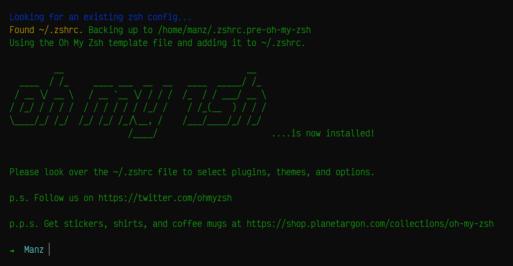
Podemos ver que el prompt de la shell ya ha cambiado a algo más bonito y amigable, haciendo uso de colores. Sin embargo, puede resultarnos demasiado simple. Veamos como podemos cambiarlo por otro theme.
Cambiar el tema de zsh¶
Una de las características más llamativas de zsh es la posibilidad de cambiar el theme de la terminal, a uno más vistoso y llamativo. La shell zsh incorpora de serie varios themes para la terminal que podemos utilizar según nuestros gustos.
Por ejemplo, uno de mis preferidos es agnoster. Para seleccionar este tema, simplemente tenemos que editar el archivo de configuración ~/.zshrc y buscar la línea siguiente:
ZSH_THEME="robbyrussell"
El tema robbyrussell es el que viene por defecto, pero podemos cambiarlo por agnoster o por cualquier otro de la lista de themes de zsh. De hecho, incluso podemos indicar random como tema, y descomentar una línea que aparece más abajo, que nos activar un tema aleatorio de esa lista, de forma aleatoria cada vez que abramos una terminal:
ZSH_THEME_RANDOM_CANDIDATES=( "robbyrussell" "agnoster" "xiong-chiamiov" )
Si todo ha ido bien al cambiar el tema por agnoster, al guardar el fichero de configuración y abrir una nueva terminal ya debería aparecernos la nueva interfaz del intérprete de comandos:
Autocompletado y sugerencias¶
Existen una serie de plugins creados por la comunidad de zsh muy interesantes, que podemos instalar en nuestra terminal para ampliar sus capacidades y hacerla mucho más cómoda.
| Plugin | Descripción |
|---|---|
| zsh-syntax-highlighting | Resaltado de sintaxis para comandos, basado en fish. |
| zsh-autosuggestions | Sugerencias basadas en el historial, basado en fish. |
| zsh-completions | Autocompletado mejorado para comandos. |
El primero de ellos, zsh-syntax-highlighting, es el resaltado de color de comandos, el cuál viene de una característica que incorporaba inicialmente el intérprete de comandos fish. Al escribir un comando en la terminal nos aparecerá en rojo si no está instalado en el sistema o en verde si está disponible para utilizar. De esta forma sabremos, a medida que vamos escribiendo los comandos, si los estamos escribiendo bien (o por lo contrario, tenemos erratas) o si no se encuentra instalado un comando, por ejemplo, incluso antes de pulsar la tecla ENTER.
El segundo, zsh-autosuggestions, es un plugin que a medida que escribimos un comando, nos sugiere y recuerda comandos escritos anteriormente (que residen en el historial de la terminal) en color gris de fondo, para que sea más sencillo para nosotros identificarlos. Pulsando → le decimos a zsh que lo recupere íntegro, lo que puede ser útil para comandos largos.
Por último, el plugin zsh-completions nos permite activar ciertas características interesantes de autocompletado en zsh, como por ejemplo atajos al pulsar TAB en git, composer de PHP, nano, el firewall ufw, node y muchos otros.
Para instalar estos plugins, lo que tendremos que hacer es simplemente copiar y pegar los siguientes comandos. En ellos, lo que estamos haciendo es descargarnos (clonar el repositorio del plugin de git) y guardándolo en nuestra carpeta personal, en un apartado de plugins personalizados de oh-my-zsh. Podemos hacerlo todo con estos tres comandos:
git clone https://github.com/zsh-users/zsh-autosuggestions ${ZSH_CUSTOM:-~/.oh-my-zsh/custom}/plugins/zsh-autosuggestions
git clone https://github.com/zsh-users/zsh-syntax-highlighting.git ${ZSH_CUSTOM:-~/.oh-my-zsh/custom}/plugins/zsh-syntax-highlighting
git clone https://github.com/zsh-users/zsh-completions ${ZSH_CUSTOM:=~/.oh-my-zsh/custom}/plugins/zsh-completions
Una vez hecho, editamos el fichero ~/.zshrc y bajamos hasta la linea donde se cargan los plugins, generalmente con esta configuración plugins=(git). Ampliamos esa lista de plugins, escribiendo lo siguiente:
plugins=(git zsh-autosuggestions zsh-syntax-highlighting zsh-completions)
autoload -U compinit && compinit
Con esto, cargaremos esos 4 plugins y tendremos listo estas funcionalidades adicionales desde que volvamos a abrir una nueva terminal.
Error 12: character not in range¶
Es muy común, que instalando los plugins, gestionando los themes y personalizando los apartados anteriores, te puedas encontrar de repente con que al iniciar la terminal, nos aparece un error similar al siguiente:
(anon):12: character not in range
Este problema ocurre por conflictos en la lectura de carácteres Unicode, ya que es posible que esté intentando leer alguno que no exista en el conjunto de carácteres instalados. Para resolverlo, simplemente instala los paquetes de localización escribiendo sudo apt install locales-all y reinicia la terminal.
Carpetas (directorios) en Linux¶
GNU/Linux tiene su propia distribución de ficheros y carpetas que, para usuarios que provengan de Windows, puede ser confusa, ya que es bastante diferente. En Linux hay una máxima que se sigue como filosofía: todo son ficheros: los «accesos directos», los dispositivos físicos como el ratón o el teclado, los discos duros, las carpetas, e incluso y obviamente, los ficheros.
Mientras que en Windows, una ruta normal de carpetas podría ser C:\Users\Manz, una ruta equivalente en un sistema operativo Linux sería /home/manz:
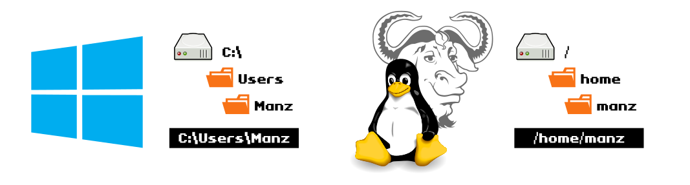
En Linux, los nombres de ficheros son sensibles a mayúsculas y minúsculas, es decir, puede coexistir un fichero llamado gato y otro Gato en la misma carpeta, puesto que son ficheros diferentes. Sin embargo, en un sistema Windows, serían el mismo fichero.
¿En qué carpeta estoy? (pwd)¶
En una terminal de Linux, normalmente a la izquierda se nos muestra la carpeta donde nos encontramos (o parte de ella). Sin embargo, dependiendo de la configuración de nuestra shell, es posible que no aparezca. Si queremos saber en que carpeta nos encontramos, podemos utilizar el comando pwd (print work directory).
Si no tenemos muy clara la estructura de carpetas donde estamos, podemos utilizar el comando tree, el cuál nos muestra un árbol de carpetas, esquematizado. Por ejemplo, escribiendo tree /var/log nos mostrará algo parecido a esto:
$ tree /var/log
/var/log
|-- alternatives.log
|-- apt
| |-- eipp.log.xz
| |-- history.log
| `-- term.log
|-- btmp
|-- dpkg.log
|-- faillog
|-- lastlog
`-- wtmp
1 directory, 9 files
De esta forma podemos ver «pseudo-gráficamente» la estructura de carpetas. Ten en cuenta que el comando tree no viene instalado en el sistema, y hay que instalarlo previamente con un sudo apt install tree.
Listar ficheros (ls)¶
Para ver los ficheros y carpetas del directorio actual, basta con utilizar el comando ls (LiSt files). Esto mostrará una lista en horizontal con todos los ficheros y carpetas encontradas. También podemos especificar la ruta que queremos listar por parámetro, por ejemplo: ls /home. Por ejemplo:
$ ls /
bin boot dev etc home lib lib64 media mnt opt proc root run sbin srv sys tmp usr var
En algunos casos, puede que el
lsdevuelva los ficheros sin resaltado de sintaxis de color. Puedes probar conls --colorpara ver si muestra los ficheros con colores. Las distribuciones de Linux, suelen crear un alias en el fichero~/.bashrco~/.zshrcpara que cuando se escribals, realmente se haga unls --color.
Existen algunos parámetros interesantes para mostrar más información al listar ficheros y carpetas, como por ejemplo ls -lh, donde la l usa el formato ancho (más información) y la h muestra «en humano» el tamaño de los ficheros (usando unidades para que sea más fácil).
Aquí vemos algunos de los más interesantes:
| Parámetros | Descripción |
|---|---|
-l (long) |
Usa el formato ancho para mostrar datos adicionales (tamaño, permisos, etc...) |
-a (all) |
Muestra también ficheros ocultos (que empiezan por punto) |
--color |
Activa colores al mostrar los ficheros. |
-h (human) |
Muestra el tamaño de los archivos con la unidad K, M o G. |
-S (size) |
Ordena ficheros por tamaño, el más pesado primero. |
-t (time) |
Ordena ficheros por fecha de modificación, el más reciente primero. |
-r (reverse) |
Invierte el orden de los ficheros. |
Observa que para indicar varios parámetros, en lugar de escribir, por ejemplo, ls -l -h -S puedes contraer los parámetros y escribir ls -lhS.
Mejora del ls (exa)¶
Existe una alternativa al ls, bastante interesante, que utiliza resaltado de sintaxis para que sea más sencillo identificar los permisos rápidamente. Se llama exa y está desarrollada en Rust. Podemos instalar esta herramienta fácilmente si disponemos de Rust en nuestro sistema, utilizando su gestor de paquetes. Simplemente escribimos cargo install exa y lo instalaremos.
La salida del formato largo de exa es el siguiente:
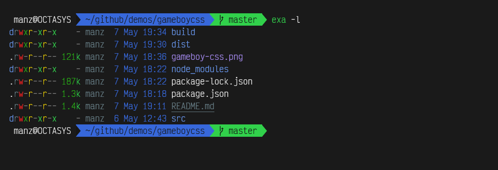
Aunque no es un reemplazo 100% idéntico en parámetros, puedes crear un alias de ls para que ejecute exa en su lugar. Como curiosidad y para una mejor identificación de ficheros, con el parámetro exa --icons puede mostrar iconos de los tipos de ficheros a la izquierda.
Existe otra alternativa a ls llamada lsd y muy parecida a exa. Puedes descargarla e instalarla haciendo lo siguiente:
sudo apt install wget
wget https://github.com/Peltoche/lsd/releases/download/0.17.0/lsd_0.17.0_amd64.deb
sudo dpkg -i lsd_0.17.0_amd64.deb
También tiene resaltado de sintaxis con colores, soporte de iconos, junto a otras características, por lo que también es una buena opción.
Cambiar de carpetas (cd)¶
Para movernos entre carpetas, utilizaremos el comando cd (change directory) seguido del nombre de la carpeta (movimiento relativo) o ruta completa (movimiento absoluto) a la que queremos acceder. Ten en cuenta que al escribir el nombre de la carpeta o ruta, puedes pulsar TAB y el sistema te sugiere las opciones que encajen con lo que has escrito (o autocompleta si solo hay una opción), de modo que no tendrás que escribirlo por completo.
Existen algunas palabras clave para referirnos a rutas específicas:
| Símbolo | Ejemplo | Descripción |
|---|---|---|
.. |
cd .. |
«Sale» de la carpeta actual y se mueve a la carpeta padre. |
. |
Hace referencia a la carpeta actual. Útil como abreviatura. | |
~ |
cd ~ |
Accede a la carpeta personal del usuario. Igual que escribir cd sin parámetros. |
De la misma forma, se pueden hacer combinaciones como ls ~/.oh-my-fish/, que es lo mismo que ls /home/manz/.oh-my-fish/ (si soy el usuario manz) o ls ../etc sería equivalente a ls /etc si estoy en la carpeta /home.
Pila de carpetas (pushd / popd)¶
Otra forma de trabajar entre carpetas, es utilizando los comandos pushd (push directory) y popd (pop directory). Ambos funcionan trabajando con una estructura de pila donde podemos hacer push (para meter una carpeta) o pop (para sacar una carpeta). De esta forma, si sabemos que más adelante necesitaremos volver a acceder a una ruta compleja, podemos hacer lo siguiente:
$ pushd /etc/nginx # Guarda la ruta /etc/nginx en la pila
$ cd /home/manz # Cambiamos a otra ruta
... # Trabajamos en esa ruta
$ popd # Vuelve a la ruta guardada previamente en la pila
Podemos ejecutar varias veces el comando pushd e ir apilando varias rutas o carpetas diferentes. También tener en cuenta que se puede utilizar . como parámetro de pushd para guardar la ruta actual en la que nos encontramos de forma rápida.
Mejora del cd (autojump)¶
Si acostumbras a trabajar en una terminal, es muy común perder bastante tiempo escribiendo los nombres de las carpetas o pensando cuál era la ruta, en la que estabas, si no estás muy familiarizado con ella.
El comando autojump es una mejora interesante del cd, ya que se basa en saltar a la carpeta «freciente» que más se aproxime al parámetro escrito; esto es, la ruta o carpeta más frecuente y más reciente. Veamoslo con un ejemplo:
$ cd /etc/nginx
$ ls -lh
$ cd /home/manz
$ j nginx
/etc/nginx
En el ejemplo anterior, al escribir j nginx, el comando autojump accede a la ruta /etc/nginx, porque es la carpeta más reciente a la que hemos accedido frecuentemente que encaja con el texto escrito por parámetro: nginx. El comando nos muestra por pantalla la carpeta coincidente, y cambia a ella automáticamente.
Nota
El comando j es un alias de autojump y no viene instalado por defecto en el sistema. Para instalarlo en Debian, basta con hacer un sudo apt install autojump y añadir la línea source /usr/share/autojump/autojump.bash (la extensión depende de la shell que usemos). Existen otras mejoras similares como z, v o fasd.
Carpetas del sistema¶
Linux tiene una estructura de carpetas bien definida, donde cada carpeta tiene una finalidad muy concreta, y en ella se guardan los archivos correspondientes. Por otra parte, mientras que en Windows la ruta raíz (la primera carpeta del sistema) es C:\, en Linux es /, puesto que todo parte de esa ruta raíz.
Desde esa ruta / nos podemos encontrar varias carpetas, cada una con una finalidad concreta:
| Carpeta | Descripción |
|---|---|
/ |
Carpeta raíz del sistema. Equivalente a C:\ en Windows. |
/bin |
Binarios (comandos ejecutables) principales. |
/boot |
Archivos de arranque. Equivale a C:\bootmgr en Windows. |
/dev |
Dispositivos físicos de hardware. |
/etc |
Archivos de configuración. Equivale al registro de Windows. |
/home |
Carpetas del usuario. Equivale a C:\Users en Windows. |
/lib |
Bibliotecas del sistema. Equivale a C:\Windows\System32. |
/lost+found |
Archivos corruptos o recuperados. |
/media |
Medios extraíbles. Generalmente, carpetas de CD/DVD, usb, unidades extraíbles... |
/mnt |
Montaje temporal reservado para el administrador de sistemas. |
/opt |
Aplicaciones o paquetes adicionales (opcionales). |
/proc |
Procesos internos del sistema. |
/root |
Carpeta personal del administrador. |
/run |
Información reciente. |
/sbin |
Archivos binarios reservados para root. Sólo accesible si tienes privilegios. |
/srv |
Datos específicos para servicios. |
/sys |
Nueva versión o evolución de /proc/ |
/tmp |
Archivos temporales. Muchas veces, eliminados al reiniciar el sistema. |
/usr |
Datos de paquetes instalados. Equivale a C:\Archivos de Programa en Windows. |
/var |
Logs, cache, variables, etc... |
Manipular ficheros y carpetas¶
Para trabajar desde una terminal, es muy necesario saber moverse entre carpetas y manipular ficheros y carpetas. Acciones como copiar, mover y borrar ficheros o crear carpetas forman parte del día a día en nuestras terminales de texto.
Por esa razón es necesario conocer algunos de los comandos más habituales para estas y otras tareas relacionadas, así como sus parámetros o curiosidades más importantes.
Identificar ficheros (file)¶
Existe un comando no demasiado conocido llamado file con el cuál puedes saber con que tipo de fichero estás trabajando. En principio, normalmente identificamos a los ficheros por sus extensiones, si es .txt es un fichero de texto y si es .mp3 se trata de un archivo de audio. Sin embargo, estas extensiones son una convención. Nada me impide renombrar un fichero .txt como .mp3. Simplemente, no funcionará si lo abro con un reproductor de audio.
$ file /etc/hosts
/etc/hosts: ASCII text
$ file music.s3m
/home/manz/music.s3m: ScreamTracker III Module sound data
Sin embargo, file no se guiará por la extensión, sino que analizará su contenido, más concretamente su número mágico, para intentar reconocer que tipo de archivo es.
Nota
Si file no es lo suficientemente exhaustivo para ti, existe un proyecto llamado trID que tiene la misma filosofía que file pero analiza los ficheros en mayor profundidad.
Copiar ficheros (cp)¶
Una operación básica a la hora de usar una terminal es la de copiar ficheros. Nos encontramos continuamente haciendo copias de ficheros o carpetas, ya sea de una ruta a otra o sobre la misma carpeta donde nos encontramos. Para ello, utilizamos el comando cp (copy), que suele utilizarse de la siguiente forma:
$ pwd
/home/manz
$ cp origen.txt /home/tux/destino.txt
En este sencillo ejemplo hemos copiado el fichero origen.txt desde la carpeta /home/manz a la carpeta /home/tux cambiándole el nombre a destino.txt.
Asumamos que seguimos en la carpeta /home/manz:
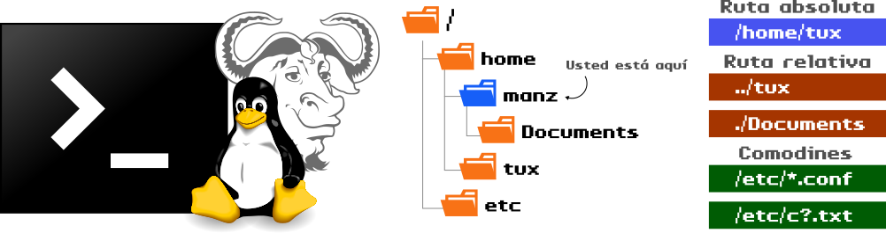
La forma en la que especificamos las rutas y copiamos ficheros, pueden simplificarse y hacerse más flexibles dependiendo de si utilizamos rutas absolutas o rutas relativas:
| Tipo | Descripción |
|---|---|
| Ruta absoluta | Ruta completa de la carpeta o fichero desde el raíz. Ej: /home/tux |
| Ruta actual | Ruta donde nos encontramos actualmente. Ej: . |
| Ruta padre | Ruta a la carpeta anterior de donde nos encontramos actualmente. Ej: .. |
| Ruta relativa | Ruta completa, pero sólo a partir de la carpeta donde nos encontramos. Ej: ../tux |
Veámoslo con varios ejemplos:
# Caso 1: Rutas absolutas
$ cp /home/manz/origen.txt /home/tux/destino.txt
# Caso 2: Rutas relativas
$ cp origen.txt destino.txt
# Caso 3: Rutas relativas
$ cp origen.txt ../tux/destino.txt
# Caso 4: Ruta absoluta y ruta relativa
$ cp /etc/resolv.conf ./backup.conf
- El primer caso, equivalente al primer ejemplo, pero indicando rutas absolutas.
- El segundo caso, creamos una copia con nombre
destino.txten la misma ruta. - El tercer caso, asumiendo que seguimos en la ruta
/home/manz, copiamos el ficheroorigen.txta la ruta relativa../tux, es decir, a/home/tux, con nombredestino.txt. - El cuarto caso, copiamos el fichero
resolv.confde la ruta/etca., o sea, la carpeta actual donde nos encontramos, pero con el nombrebackup.conf.
Por otro lado, es importante recalcar que el comando cp tiene algunos parámetros que pueden resultarnos útiles, como por ejemplo el parámetro -r que nos permite hacer copias recursivas, esto es, no sólo copiar ficheros, sino carpetas y su contenido, ya que por defecto cp solo copia ficheros.
Los parámetros más populares son los siguientes:
| Parámetro | Significado |
|---|---|
-r (recursive) |
El comando cp sólo copia ficheros. Usar -r si se quiere copiar carpetas y su contenido. |
-u (update) |
Copia sólo cuando no hay fichero de destino. Si existe, sólo cuando el origen es más nuevo. |
-n (no clobber) |
No sobreescribe en el destino un fichero que ya existe. |
-v (verbose) |
Por defecto, cp trabaja en silencio. Con este parámetro muestra lo que está haciendo. |
Mover o renombrar ficheros (mv)¶
Al igual que hemos utilizado cp para copiar ficheros, podríamos utilizar mv (move) para mover archivos. La diferencia entre estos dos comandos es que, mv en lugar de mantener el fichero original como hace cp, lo elimina tras la copia:
# Caso 1: Mueve un fichero
$ mv /home/tux/info.txt /home/manz/
# Caso 2: Mueve y renombra un fichero
$ mv /home/tux/info.txt /home/manz/tuxdata.txt
# Caso 3: Renombra un fichero
$ mv info.txt tuxdata.txt
Obsérvese que en el primer caso, se está moviendo un fichero a una ruta concreta, pero podemos utilizar mv para renombrar a la vez que movemos (como en el caso 2) o simplemente renombrar sin mover de ruta (caso 3).
De la misma forma que cp, el comando mv tiene los mismos parámetros que mencionamos.
Borrar ficheros (rm)¶
Probablemente, otro de los comandos más utilizados en la terminal es rm (remove), que sirve para eliminar ficheros o carpetas de nuestro sistema. Hay que tener mucho cuidado con él, ya que una vez un fichero es eliminado, aunque no es imposible, es complicado recuperarlo.
| Parámetro | Significado |
|---|---|
-f (force) |
Fuerza a hacer el borrado, sin preguntar. |
-r (recursive) |
Elimina recursivamente carpetas y su contenido. |
-d (dir) |
Elimina carpetas vacías. |
-v (verbose) |
Por defecto, rm trabaja en silencio. Con este parámetro muestra lo que está haciendo. |
Como mencionamos anteriormente, el comando rm realmente no borra un fichero, sino que lo «marca» en el disco como reutilizable. Si la zona del disco donde residía es sobreescrita con otro fichero, probablemente sea imposible recuperarlo, pero en caso contrario hay cierta posibilidad.
Nota
Si deseas eliminar por completo un fichero, sin posibilidad de recuperación, es mejor utilizar el comando shred -u seguido del nombre del fichero a eliminar. Este comando sobreescribe con información aleatoria el fichero, y luego lo elimina (parámetro -u).
Mejora del rm (rip)¶
Si la filosofía por defecto del comando rm no te agrada, o eres una persona que suele eliminar ficheros por accidente, quizás te interese el comando rip (rm improved).
Se trata de una alternativa a rm desarrollada en Rust, que establece que al eliminar un archivo con rip, pasa a estar «muerto» en una zona del disco denominada «cementerio» (por defecto, /tmp/graveyard-user, donde user es el nombre de usuario), que hace las veces de papelera de reciclaje tétrica.
Si hemos borrado accidentalmente el fichero, podemos «resucitarlo» escribiendo rip -u (undelete) o simplemente acceder a los ficheros dentro de la estructura del cementerio. Si queremos vaciar el cementerio, basta con escribir rip -d (decompose) o eliminar la estructura de carpetas manualmente.
Otra alternativa similar a rm podría ser trash-cli.
Crear carpetas o ficheros vacíos¶
Mediante el comando mkdir, seguido de un nombre de carpeta, podemos crear nuevas carpetas vacías.
Si queremos crear una estructura de varias carpetas una dentro de otra, en vez de hacerlo una por una. El siguiente comando crea una carpeta parent, que dentro tiene una carpeta child y dentro de ella, una carpeta grandchild:
$ mkdir -p parent/child/grandchild
Por otro lado, el comando touch sería la versión de mkdir orientada a ficheros en lugar de carpetas. Si necesitamos crear un archivo vacío, por ejemplo, para editar más tarde, podemos hacerlo rápidamente con touch:
touch file.txt
El comando anterior crearía un fichero vacío con nombre file.txt. Si ya existiera el archivo, simplemente actualiza su fecha de modificación.
Crear enlaces (ln)¶
El comando ln (link names) permite crear enlaces entre ficheros, una especie de referencias o accesos directos a ficheros, rutas o carpetas. Existen dos tipos de enlaces:
-
Los enlaces duros. Son los ficheros que apuntan a otro fichero basándose en su número interno (inodo). Se crean utilizando el comando
ln. De esta forma podemos tener varios archivos con el mismo contenido, pero sus copias no duplican el contenido del fichero original, sino que son una referencia al primero. Son poco utilizados. -
Los enlaces simbólicos (también considerados enlaces blandos). Son un tipo de referencia a otros ficheros, pero esta vez basándose en su ubicación. Se crean utilizando el comando y parámetro
ln -s. De esta forma, cuando accedemos a un enlace simbólico, realmente estamos accediendo al fichero que apunta. Si creamos un enlace simbólico y borramos su archivo original, el enlace aparecerá en rojo y se considerará un enlace simbólico roto.
Veamos un ejemplo:
$ ln -s original.txt link
$ ls -lh
total 0
lrwxrwxrwx 1 manz manz 12 jul 1 19:37 link -> original.txt
-rw-r--r-- 1 manz manz 0 jul 1 19:37 original.txt
Como se puede ver, con el comando ln creamos un enlace, y con el parámetro -s indicamos que queremos que sea simbólico. El primer fichero indicado sería el archivo original al que queremos apuntar, mientras que el segundo fichero indicado sería el enlace simbólico que queremos crear.
Al hacer un ls, observaremos que nos indica a donde apunta el enlace simbólico (puede ser un fichero, una carpeta, etc...). En el caso de que el enlace se encuentre correcto, aparecerá en azul cyan, pero si el fichero original a donde apunta no existiera, aparecería en rojo.
Estos enlaces pueden ser realmente útiles cuando necesitamos que en la carpeta actual exista el contenido de otra carpeta, pero no queramos duplicar la información (son carpetas con mucho espacio ocupado) o queremos mantenerlo actualizado y simplemente queremos una referencia de una carpeta a otra.
Mostrar contenido de un fichero¶
A medida que trabajamos con ficheros en una terminal, el nombre del fichero, su ubicación o su extensión puede no ser información suficiente para saber si se trata del fichero que buscamos, e interesarnos mostrar el contenido de un fichero rápidamente, para saber si es el que buscamos o simplemente porque queremos ver su contenido.
Mostrar contenido (cat)¶
Para ello, se suele utilizar el comando cat (conCATenate files), que técnicamente se considera un comando que concatena (une) la salida de uno o varios ficheros. Esto, dicho de otra forma, es que cat no se limita a mostrar el contenido de un solo fichero (como suele usarse habitualmente), sino que puede hacer cosas aún más potentes.
Por ejemplo, el caso más básico sería el siguiente:
$ cat /etc/timezone
Atlantic/Canary
En este ejemplo, mostraríamos el contenido del fichero timezone ubicado en la ruta /etc. Se trata de un fichero que guarda la zona horaria del sistema. De esta forma, podríamos consultarla rápidamente, sin tener que abrirla con un editor. Sin embargo, también podríamos hacer lo siguiente para mostrar el contenido de varios ficheros:
$ ls /etc/deb*
/etc/debconf.conf /etc/debian_version
$ cat /etc/deb*
Con el comando cat /etc/deb* indicamos que queremos que nos muestre el contenido de todos los fichero que comiencen por deb y estén situados en /etc (en este caso 2 ficheros) y no tendríamos que hacerlo individualmente, uno por uno.
El comando cat tiene algunos parámetros interesantes:
Parám.
Descripción
-s
Suprime espacios consecutivos repetidos y los convierte en uno solo.
-n
Numera las líneas, a la izquierda.
-b
Numera solo las líneas no vacías.
Mejora del cat (bat)¶
Existe una alternativa muy interesante al comando cat, llamada bat y desarrollada en Rust. Dicho comando mejora sustancialmente al comando cat, utilizando características como resaltado de sintaxis en color para lenguajes de programación, soporte para cambios de git, paginación (ver más adelante) automática, etc...
Para instalarla, necesitaremos tener en nuestro sistema Rust instalado, y utilizar su gestor de paquetes cargo. Con él, podremos escribir cargo install bat y lo tendremos disponible. Las últimas versiones de Debian, ya lo incorporan para instalar con un simple sudo apt install bat.
La salida del comando bat de un fichero Javascript sería similar a la siguiente:
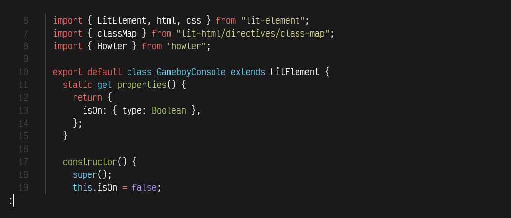
El comando bat dispone de varios parámetros interesantes:
| Parám. | Descripción |
|---|---|
--list-languages |
Muestra los lenguajes soportado en el resaltado de sintaxis. |
-l <lang> |
Especifica el lenguaje a resaltar (C++, javascript, css, rust, ...) |
--list-themes |
Muestra los temas de resaltado de sintaxis disponibles en bat. |
--theme <theme> |
Especifica el tema de resaltado a utilizar. |
-p |
Muestra un formato plano, por si queremos desactivar temporalmente el resaltado. |
-n |
Numera las líneas, pero no utiliza otras decoraciones como los bordes. |
-A |
Muestra los carácteres ocultos (espacios, tabuladores, nueva línea, etc...) |
-r <ini>:<fin> |
Muestra las líneas ini a fin del fichero. Por ejemplo: bat -r 4:10 file.js |
Nota
Ejecutando bat --list-themes veremos la lista de temas disponibles para el resaltado de sintaxis. Puedes usar uno de ellos escribiendo bat --theme base16 (por ejemplo). También puedes aprovechar para incluirlo en un alias de la shell y que se ejecute al hacer un cat.
Mostrar contenido al revés (tac)¶
Si el comando cat nos muestra el contenido de un fichero de arriba a abajo, es decir, desde su primera línea a su última línea, el comando tac (cat al revés) hace justo lo contrario, mostrar el contenido de un fichero de abajo a arriba, desde su última línea a la primera.
$ tac textfile.txt
Esta es la última línea.
Esta es la segunda línea.
Esta es la primera línea.
Otra opción posible, aunque menos común, es que si buscamos mostrar el contenido de un archivo al revés, pero en lugar de abajo a arriba, de derecha a izquierda, podemos utilizar el comando rev, que invierte el orden horizontal:
$ cat textfile.txt | rev
.aeníl aremirp al se atsE
.aeníl adnuges al se atsE
.aeníl amitlú al se atsE
Paginar contenido (more)¶
Pero en algunos casos, nos encontraremos que el contenido de un archivo es demasiado extenso y no nos da tiempo de leer su contenido antes de que siga avanzando en el contenido. La mejor forma de solucionar ese problema es utilizar un paginador.
Se trata de un comando que, una vez detecta que la pantalla está llena, hace una pausa, y no continua hasta que el usuario pulse una tecla. De esta forma, puede ir leyendo poco a poco los contenidos mostrados en pantalla. El paginador más conocido se llama more y se utiliza de la siguiente forma:
$ cat largetextfile.txt | more
En este caso estamos utilizando un pipe | que obtiene la salida por pantalla del primer comando y se lo envía al segundo, que es el paginador.
De esta forma, el paginador hace una pausa cuando se llena la pantalla, mostrando una línea more al final de la pantalla y esperando a que el usuario pulse una tecla. Dependiendo de la tecla que se pulse, el paginador more hará una acción concreta:
| Tecla | Descripción |
|---|---|
| ENTER | Avanza una sola línea. |
| SPACE | Avanza una página. |
| = | Muestra la línea donde se encuentra el paginador. |
| /word | Busca la palabra word en el texto y va hasta ella. |
| n | Vuelve a buscar la última palabra buscada. |
| Q | Sale del paginador y vuelve a la terminal. |
Sin embargo, el more es bastante limitado en cuanto a ciertas acciones.
Mejora de paginación (less)¶
Muchas veces el paginador more se nos queda corto por varias razones. Por ejemplo, una vez pulsado enter para avanzar, no podemos volver hacia atrás. Existen otros paginadores como less que son un poco más versátiles en este sentido, permitiendo utilizar los cursores ↑ y ↓ o las teclas RePág o AvPág para subir o bajar en el texto más facilmente.
El comando most es otro paginador que además muestra una barra inferior y resaltado de colores para hacer la lectura un poco más sencilla. Estos paginadores se pueden instalar en el sistema utilizando sudo apt install less most.
Nota
Tanto more, como less como most pueden utilizarse directamente como alternativa de cat. Es decir, ejecutar less largetextfile.txt para mostrar el contenido paginado.
Soporte de compresión¶
En Linux, es muy habitual trabajar con ficheros de texto plano, aunque en el caso de registros o logs, cuando son muy extensos suelen terminar ocupando mucho espacio. Para evitarlo, se suelen comprimir utilizando formatos muy comunes en Linux como .gz, .bz2 o .xz, de modo que podríamos tener los ficheros de texto originales access.log o los ficheros comprimidos, por ejemplo access.log.gz.
Los comandos cat y less tienen unas versiones alternativas que permiten realizar su finalidad (mostrar contenido o paginar) sobre archivos de texto comprimidos. De esta forma, nos ahorramos tener que descomprimir el fichero, visualizar su contenido y volverlo a comprimir, ya que estos comandos lo hacen todo sobre el archivo comprimido, sin alterarlo.
Los comandos son los siguientes:
| Comando | Compresor | Finalidad |
|---|---|---|
zcat |
gzip | Muestra el contenido de un fichero de texto comprimido .gz. |
zless |
gzip | Pagina el contenido de un fichero de texto comprimido .gz. |
bzcat |
bzip2 | Muestra el contenido de un fichero de texto comprimido .bz2. |
bzless |
bzip2 | Pagina el contenido de un fichero de texto comprimido .bz2. |
xzcat |
xz | Muestra el contenido de un fichero de texto comprimido .xz. |
xzless |
xz | Pagina el contenido de un fichero de texto comprimido .xz. |
Cambiar idioma de la terminal¶
Pueden ocurrir situaciones donde el idioma de la terminal está establecido a otro diferente del que queremos. Esto, en algunos casos, puede chocar con nuestro objetivo. Aunque es muy habitual trabajar en terminales con el idioma inglés (ya que los comandos siempre van a mantener el mismo nombre), es posible que queramos traducir las respuestas de los comandos, los mensajes de error o incluso los mensajes de ayuda o manuales, así como gestionar ciertos detalles interesantes relacionados con el idioma.
Cambiar idioma a español¶
El primer paso es asegurarnos cuál está tomando como idioma por defecto el sistema. Por ejemplo, si realizamos un sudo apt update podremos observar en que idioma nos muestra los procesos de actualización de los repositorios de apt. Es muy probable que nos aparezcan en inglés, lo que significaría que tenemos ese idioma por defecto.
Vamos a comprobar que idioma o configuración regional tenemos en el sistema. Para ello, utilizaremos el comando locale:
$ locale
LANG=
LANGUAGE=
LC_CTYPE="POSIX"
LC_NUMERIC="POSIX"
LC_TIME="POSIX"
LC_COLLATE="POSIX"
LC_MONETARY="POSIX"
LC_MESSAGES="POSIX"
LC_PAPER="POSIX"
LC_NAME="POSIX"
LC_ADDRESS="POSIX"
LC_TELEPHONE="POSIX"
LC_MEASUREMENT="POSIX"
LC_IDENTIFICATION="POSIX"
LC_ALL=
Vemos que la mayoría de variables de localización nos aparecen con la palabra clave POSIX, la cuál también podría aparecer con otros valores, como por ejemplo en_US.UTF-8, que significaría que tiene establecido el idioma Inglés (Americano).
Cada una de esas variables que aparece, tiene como objetivo definir el idioma de una característica concreta:
| Variable | Significado |
|---|---|
LANG |
Idioma general del sistema. |
LANGUAGE |
Fallback de idioma de traducción de mensajes (herramientas GNU). |
LC_CTYPE |
Clasificación de carácteres y conversiones de mayúsculas y minúsculas. |
LC_NUMERIC |
Formato numérico, decimales... |
LC_TIME |
Formato de fechas y horas, según región. |
LC_COLLATE |
Orden de clasificación (collation). |
LC_MONETARY |
Formato monetario, según región. |
LC_MESSAGES |
Formato de palabras y respuestas interactivas. |
LC_PAPER |
Tamaño y formato de página, según región. |
LC_NAME |
Formato de nombres. |
LC_ADDRESS |
Convenciones de formateo de direcciones físicas o postales. |
LC_TELEPHONE |
Convenciones usadas para la representación de números telefónicos. |
LC_MEASUREMENT |
Sistema de medida por defecto, según región. |
LC_IDENTIFICATION |
Metadatos sobre la información de región. |
LC_ALL |
Localización aplicada a todas las variables anteriores. |
Ojo
Ten cuidado en el caso de establecer un valor a LC_ALL, el cuál se desaconseja utilizar si quieres establecer excepciones particulares en alguna de las variables anteriores, ya que sobreescribe las demás.
Nuestro sistema puede estar preparado para soportar diferentes idiomas. Con el parámetro locale -a podemos ver cuales son los que tenemos a nuestra disposición. En el caso de que no tengamos el idioma que queremos establecer, lo que podemos hacer es instalar el paquete de generación de localizaciones con sudo apt install locales y editar el fichero /etc/locale.gen, donde descomentaremos los idiomas que queremos activar:
sudo vim /etc/locale.gen
en_US.UTF-8 UTF-8
es_ES ISO-8859-1
es_ES.UTF-8 UTF-8
es_ES@euro ISO-8859-15
En el ejemplo anterior, he descomentado el idioma inglés (en_US) y las diferentes variaciones del español (es_ES). Una vez hecho esto, guardamos los cambios y ejecutamos el comando locale-gen, que generará los idiomas descomentados, poniéndolos a nuestra disposición:
$ locale-gen
Generating locales (this might take a while)...
en_US.UTF-8... done
es_ES.ISO-8859-1... done
es_ES.UTF-8... done
es_ES.ISO-8859-15@euro... done
Generation complete.
Si tuvieramos algún tipo de problema al generarlos, también podemos instalar el paquete locales-all de APT, donde generalmente se incluyen todos los datos regionales precompilados.
Nota
En algunos casos, esta operación puede realizarse de forma mucho más guiada y automática con un dpkg-reconfigure locales, eligiendo posteriormente los idiomas que nos interesan de la lista que nos muestran.
Una vez terminados todos estos pasos, sólo nos quedaría añadir la siguiente línea a nuestro fichero de arranque, como por ejemplo, en la última linea de ~/.bashrc si usamos Bash, o ~/.zshrc si usamos Zsh:
export LANG=es_ES.UTF-8
Con ello añadimos la variable LANG para indicar que nuestro idioma por defecto será el aplicado. Esto se puede escribir en la línea de comandos directamente (sólo se usará ese idioma en la sesión actual) o se puede añadir al fichero que comentabamos anteriormente, para que los cambios se guarden de forma permanente.
Nota
Ten cuidado a la hora de establecer el idioma en las variables de sistema. En este ejemplo he puesto es_ES.UTF-8, pero en algunos casos puede ser es_ES.utf8 o tener un nombre ligeramente diferente. Es aconsejable mirar con el comando locale -a cuál es el que nos interesa y como se escribe concretamente.
Man pages en español¶
Es posible que aún realizando los pasos anteriores, las páginas man no muestren la ayuda en español y sólo lo haga la salida de ciertos comandos, por ejemplo. Normalmente esto se suele solucionar instalando los paquetes manpages-es (en el caso del idioma español):
apt install man manpages-es manpages-es-extra
Con dichos paquetes instalaremos las páginas man en español (ojo, siguen haciendo falta los pasos del primer apartado).
Eliminar idiomas innecesarios]¶
Si acostumbramos a instalar muchos paquetes, comandos o aplicaciones, debemos saber que las «páginas man» suelen venir junto a cada paquete, de modo que si instalamos un comando concreto, también se instala su ayuda en formato «man pages».
De la misma forma, algunos paquetes solo incorporan la ayuda en un idioma (inglés), pero en otras ocasiones, incorporan ayuda en muchos otros idiomas diferentes, cosa que puede llegar a ocupar bastante espacio en disco, y que probablemente, nunca consultemos en algún idioma diferente a los que establecemos en el primer apartado.
Justo en esta dirección va el objetivo del comando localepurge, el cuál se encarga de eliminar todas las páginas de ayuda en idiomas que no tenemos predefinidos como preferidos. De esta forma, cada vez que instalamos algo con apt, el sistema se tomará un pequeño fragmento de tiempo en eliminar las páginas man en otros idiomas, para dejar sólo las que tengamos marcadas, ahorrando así espacio en disco (en algunas situaciones es esencial, por ejemplo, docker).
Para configurarlo todo correctamente, editaremos el fichero /etc/locale.nopurge. En él podemos establecer algunas configuraciones, pero sobre todo, los idiomas permitidos que no deben ser eliminados. Un ejemplo de las últimas líneas de este fichero:
en
en_US.UTF-8
es
es_ES.UTF-8
Así pues, localepurge mantendrá toda la ayuda y páginas del manual que se encuentren en inglés o en español.
Cambiar la zona horaria¶
Otro problema bastante frecuente es el de querer cambiar la zona horaria del sistema. Para consultar la zona horaria que tenemos establecida, se puede hacer simplemente haciendo un cat al fichero /etc/timezone. De esta forma nos dirá que zona horaria tenemos configurada:
$ cat /etc/timezone
Etc/UTC
Para cambiarla nos basta con editar ese fichero y establecer la zona horaria que queremos utilizar, o utilizar el comando tzselect, el cuál nos permitirá seleccionar la zona horaria de una lista.
!!!
Si queremos optar por un proceso interactivo más automatizado, podemos utilizar el comando dpkg-reconfigure tzdata y seleccionar las opciónes 7 (Atlántico) de Área geográfica y 3 (Canarias) de Zona horaria.
$ cat /etc/timezone
Atlantic/Canary
Si volvemos a consultar, veremos que ahora ya tenemos otra zona horaria configurada.
Fuente: https://terminaldelinux.com/